Fauna
A nivel de fauna el Altiplano Cundiboyacense cuenta con una variedad de seres vivos, que habitan los diversos acosistemas de las regiones, la importancia de estos seres esta en su contribución al sostenimiento de la flora, la polinización, adicionalmente en el ciclo de la cadena alimenticia, la subsistencia de las especies infortunadamente se esta viendo amenazada por la expansión de la frontera agricola, la tala indiscriminada, la contaminación de los suelos y la urbanización desmedida que viven hoy por hoy la capital del país como los municipios que componenen el altiplano. Es por ello que es necesario un cambio en la planificación de vivienda y usos de suelos porque la modificación de los habitats y del apisajismo propio de la región, afectando a los más indefensos. Aquí observaremos una muestra de la riqueza a nivel de fauna de los departamentos de Cundinamarca y Boyacá.
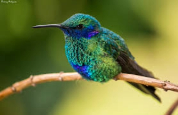
Colibrí Chillón
Es uno de los colibríes más grandes del mundo. Son de color verde esmeralda
a excepción del pecho y vientre donde resalta el azul-violeta. Tienen plumas
auriculares extendidas de color azul, que parecen orejitas, las cuales son
desplegadas en momentos de enfrentamientos por territorios. Su nombre viene
del latín Colibri: ‘colibríes’, y, coruscans que significa ‘centella, titilar, brillar’
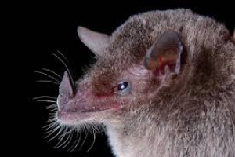
Murciélago
Lengüilargo sin cola
Habita en en las regiones
andina y pacífica principalmente. Se encuentran más comúnmente entre
los 1 200 y 2 600 m de altitud. Durante el día, grandes grupos se refugian en
dormideros: cuevas, túneles, grietas de las rocas, árboles y en ocasiones en
infraestructuras humanas.

Abeja de las
Orquideas
Se caracterizan por tener colores metalizados brillantes:
verdes, azules, rojos y dorados. En Colombia se les encuentra en todas las regiones, pero prefieren las áreas con extensos
bosques bien conservados, zonas donde igualmente la diversidad de orquídeas es mayor.
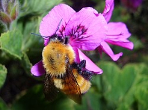
Abejorros del
Parámo
Debido a su capacidad de vivir en climas muy fríos, es uno de los mejores
polinizadores de la flora propia de regiones altas de los Andes, como
páramos y bosques altoandinos.
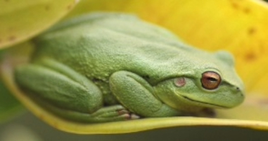
Rana
Sabanera
Es el anfibio más conocido y común del altiplano Cundiboyacense, sus patrones
de coloración son muy variados: marrón, marrón con manchas verdes, marrón
con mancha verde en forma de W, verde y verde con líneas oscuras o manchas
negras. Esta variación de color puede deberse a la temperatura y sus niveles
hormonales.
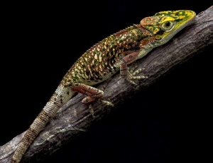
Camaleón Andino
Si bien tiene la capacidad de cambiar levemente la coloración de su piel
dependiendo del entorno donde se encuentre, bajo condiciones de estrés
cambia a colores negros o blancos; no es un camaleón verdadero.En Colombia solo se encuentra
en la Cordillera Oriental y Central, visto con mayor frecuencia en los páramos, pero también en bosques
andinos y altoandinos.
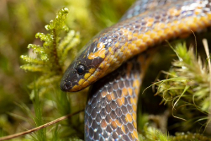
Serpiente
Sabanera
Pequeñas, inofensivas y no venenosas.
Es endémica de Colombia, presente solo en Boyacá, Cundinamarca y
Santander, habita zonas altas desde los 2.000 m hasta los 3.200 m de altitud,
prefiere climas fríos, cerca de cuerpos de agua como: humedales, laderas de
ríos e incluso jardines. Es común en áreas con intervención humana.
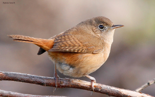
Cucarachero
Común
Su
canto es activo durante todo el año y es muy placentero al oído humano debido a
las múltiples notas que emiten en su trinar. En Colombia se distribuye en todo el país
por debajo de los 3 400 m de altitud, es común en zonas abiertas, en claros
selváticos y zonas verdes de ciudades
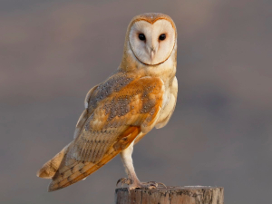
Lechuza de
Campanario
Es un ave rapaz nocturna de tamaño mediano de color blanco a castaño. En
Colombia se distribuye en todo el país
por debajo de los 3 500 m de altitud,
a excepción de los departamentos del
Chocó y Amazonas. Es común verla
en zonas urbanas, agrícolas y abiertas,
en las noches y horarios crepusculares
(Ocaso y amanecer).

Currucutú
Es un ave rapaz nocturna de un vuelo silencioso.
En Colombia está en casi todo el país por debajo
de los 2 800 m de altitud a excepción
del Chocó. Es común verlo en
selvas húmedas tropicales, bordes
de bosques, áreas abiertas y zonas
residenciales. Tiende a descansar
en ramas y cavidades de los árboles
donde permanece inmóvil por tiempos
prolongados.

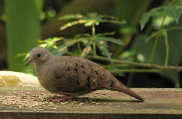
Torcazas y
Tortolitas
Son aves de vuelos rápidos y con aleteos constantes.
En Colombia se distribuyen por debajo de los 3 000
m de altitud, en las regiones Andina, Caribe y Orinoquía. Son terrestres
y arborícolas, se pueden encontrar en casi todos los hábitats y es común
verlas en áreas abiertas, terrenos áridos, ambientes agrícolas y zonas
verdes de ciudades como parques, jardines y árboles aislados.
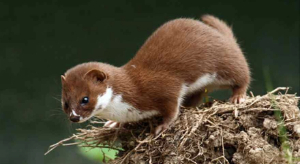
Comadreja Andina
Son pequeños mamíferos, son de hábitos diurnos y nocturnos, solitarios y generalmente
terrestres.
Habita ecosistemas de alta
montaña y bosques alto andinos.

Copetones
Tiene una distribución amplia en
el neotrópico con excepción de la
Amazonía. En Colombia se encuentra
asociado a las tres cordilleras entre los
800 a 3 600 m de altitud. Es común
verlos en jardines, parques, bordes de
caminos, pastizales y cultivos.

Chirlobirlos o
Jaqueros
Son aves de tamaño mediano.
En Colombia, se puede encontrar en las regiones
Caribe, Andina y la Orinoquía. A
menudo se le observa en áreas abiertas
como pastizales, granjas ganaderas y
parques urbanos entre los 0 a 3 500 m
de altitud.
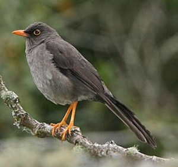
Mirlas Pajarinas
o Siotes
Son aves de tamaño mediano, pero están entre las mirlas de mayor tamaño en
Colombia. Se caracterizan por la coloración de las patas y el pico de amarillo
a naranja y los ojos cafés. En Colombia, por encima de los 2.000 m de altitud en las tres cordilleras. Se
les observa en jardines, parques de ciudades, espacios verdes, son más
abundantes en áreas abiertas como pastizales y bordes de bosques.

Mirlas Blancas
En Colombia se pueden observar
por debajo de los 2 800 m de
altitud, especialmente en los valles
interandinos, las tres cordilleras y la
región de la Orinoquía. Es bastante
común en las zonas urbanas y rurales,
sobre todo en áreas abiertas, jardines,
parques arbolados, y plantaciones o
cultivos.